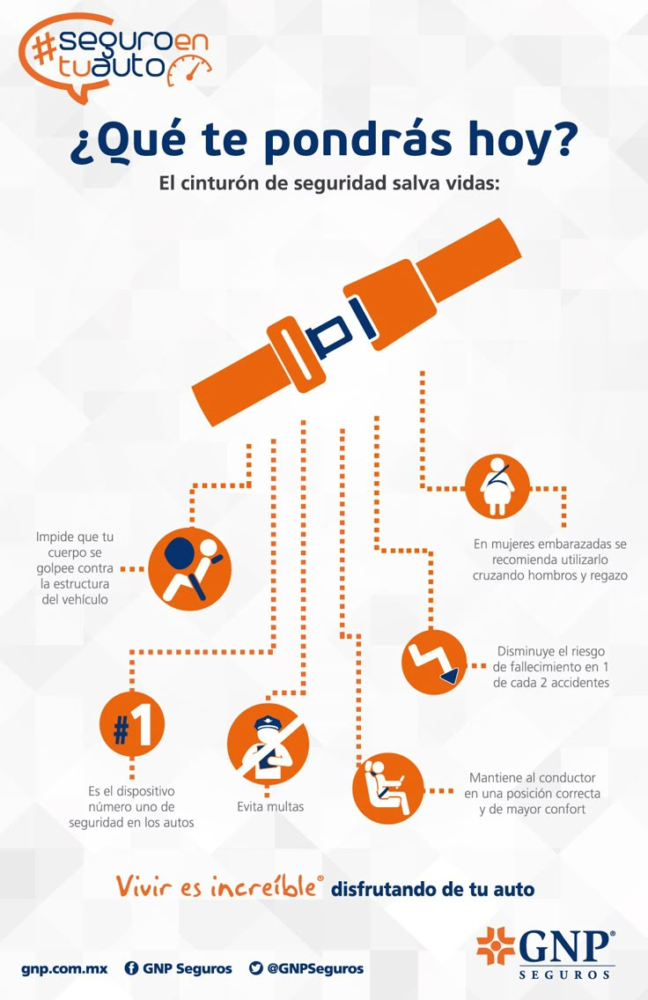

Consejos de seguridad y prevención al conducir
La seguridad vial es una responsabilidad de todos. Conducir con precaución y mantener el auto en buen estado puede evitar accidentes.
Recomendaciones clave
- Revisa regularmente frenos, neumáticos, luces y niveles de aceite.
- Respeta los límites de velocidad y señales de tránsito.
- Evita distracciones: no uses el celular mientras conduces.
- Utiliza siempre el cinturón de seguridad, en todos los asientos.
- Mantén una distancia segura con otros vehículos.
Tecnologías de seguridad
Hoy en día, muchos autos incorporan sistemas como freno automático de emergencia, asistencia de carril y control de estabilidad. Al elegir un auto, verifica si cuenta con estos elementos.
 Regresar a la página principal